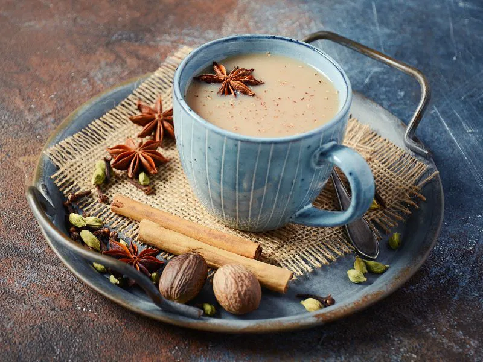

Masala Chai
Ingredients
- 2 cups water
- 1 cup milk
- 2 tsp black tea leaves
- 2-3 tsp sugar, or to taste
- 1 inch fresh ginger, grated
- 2-3 green cardamom pods, lightly crushed
- 1 small cinnamon stick
- 2-3 cloves
- 2-3 black peppercorns, lightly crushed
Instructions
- Crush the ginger, cardamom, cloves, and black peppercorns lightly using a mortar and pestle.
- Add water to a saucepan and bring it to a boil. Add the crushed spices and cinnamon stick.
- Reduce the heat and allow the spices to simmer for 2-3 minutes so their flavors infuse into the water.
- Add the black tea leaves and simmer for another 1-2 minutes, depending on how strong you prefer your tea.
- Pour in the milk and add sugar. Stir well and bring the chai to a gentle boil.
- Simmer the chai for 2-3 minutes, allowing the milk, tea, and spices to blend together beautifully.
- Strain the chai through a fine tea strainer into cups, removing the tea leaves and whole spices.
- Serve hot and enjoy your Masala Chai with biscuits, snacks, or your favorite homemade treat.
